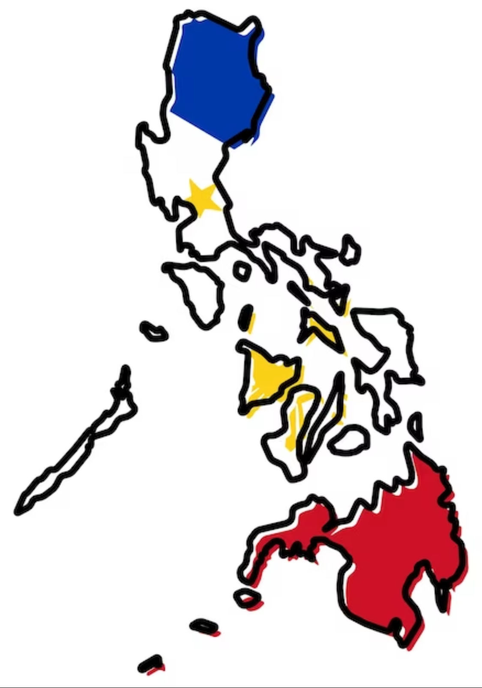
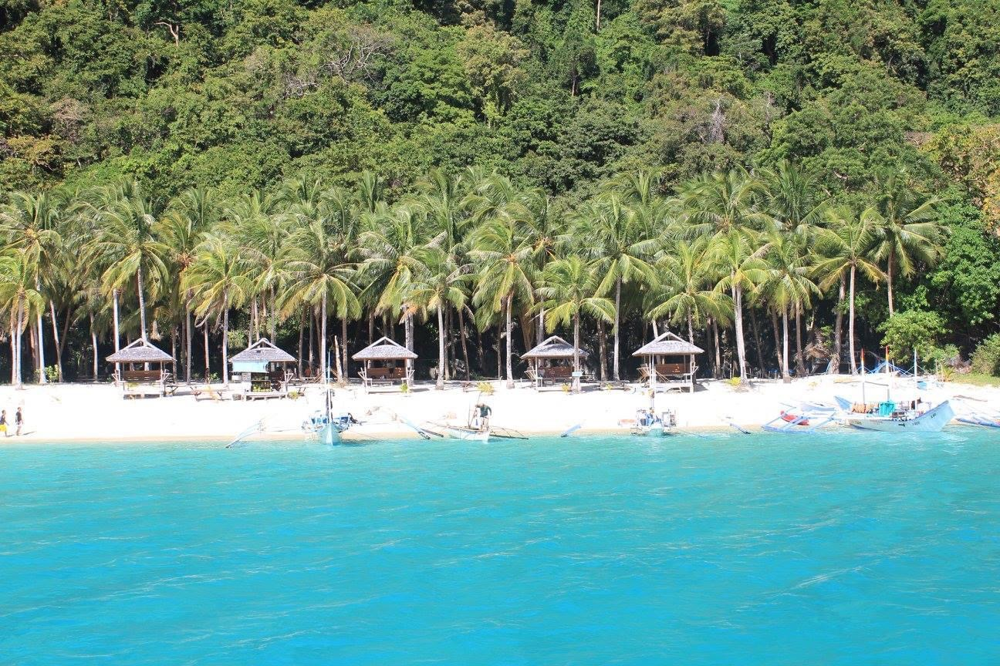
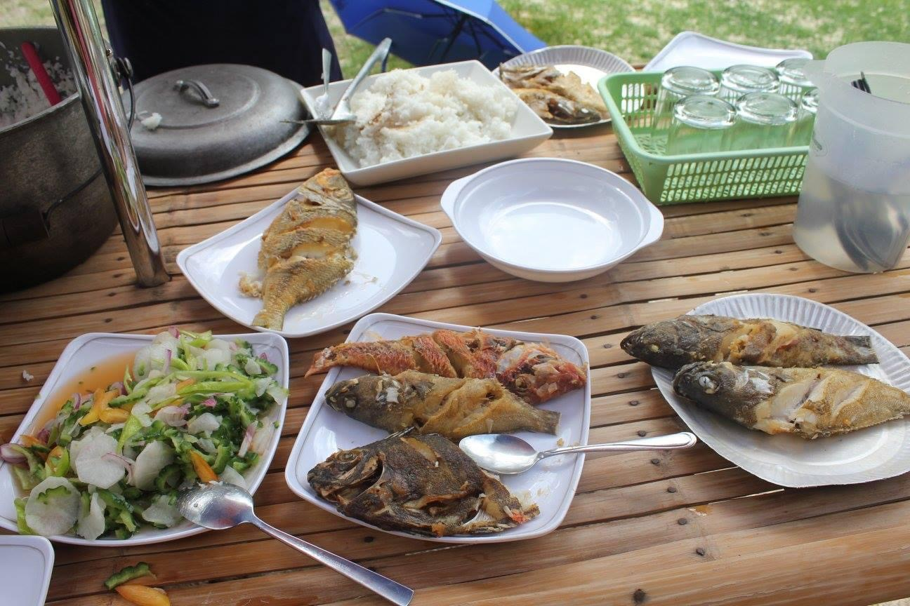
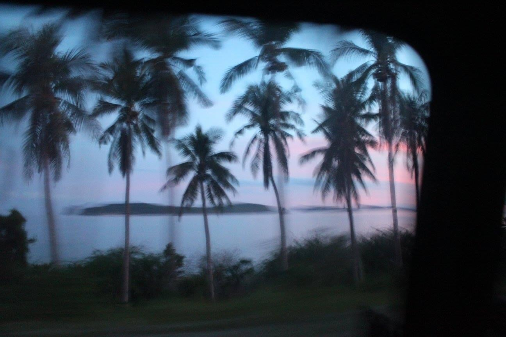
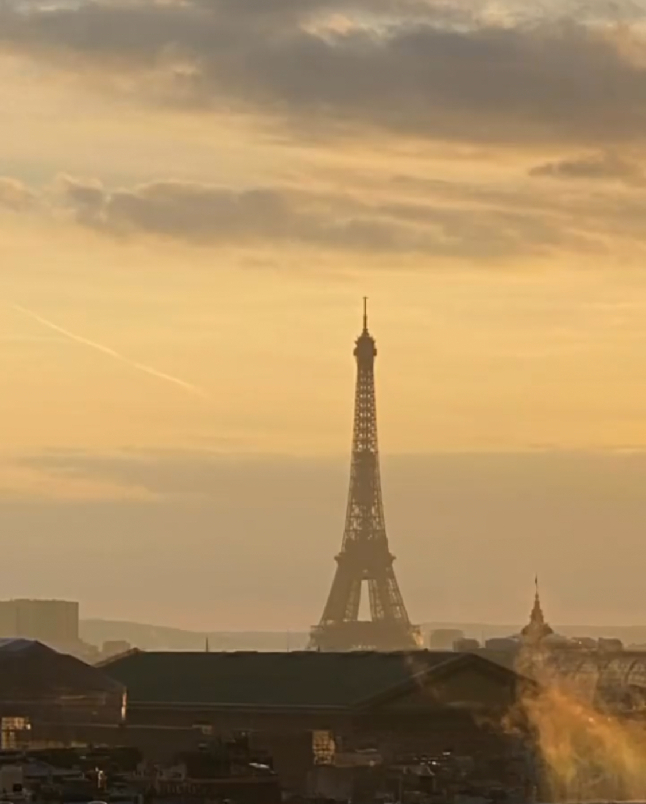
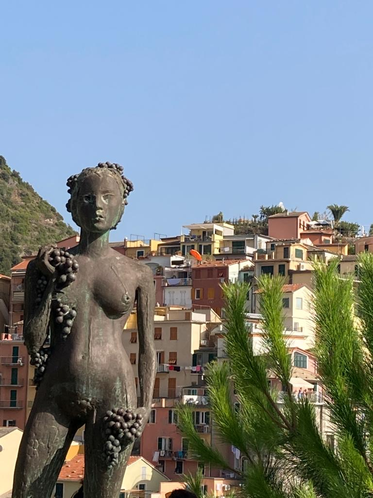
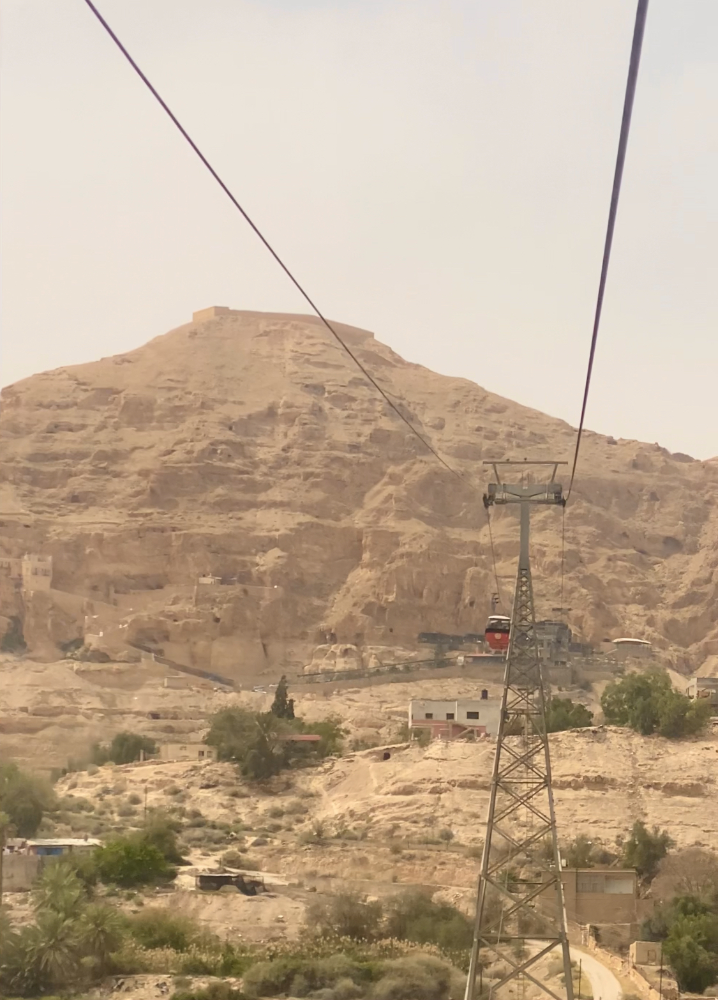
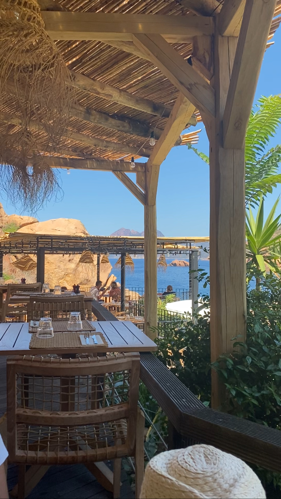
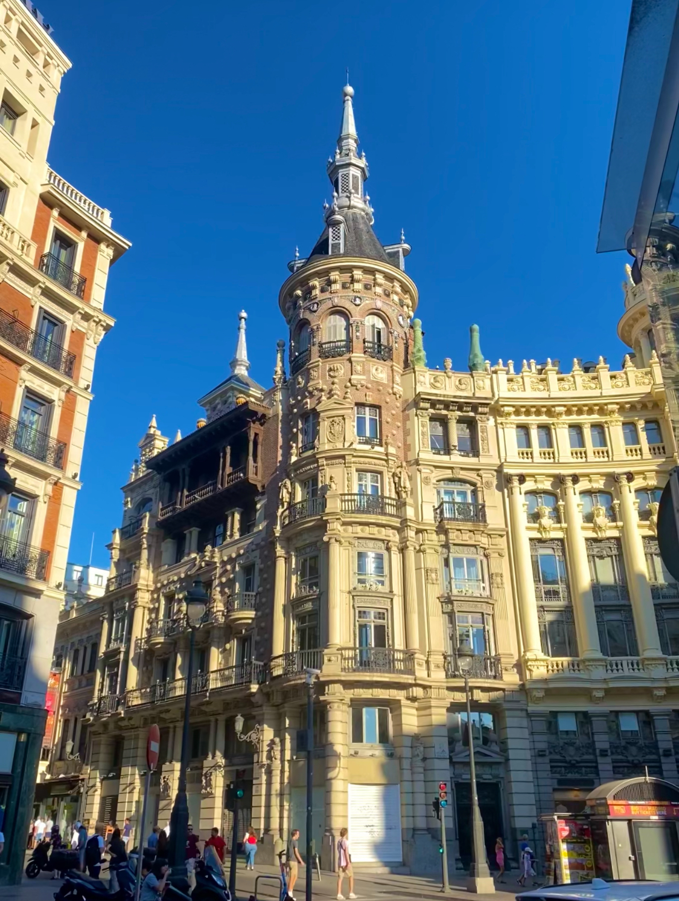

Hello You!!!!!
Hi my name is Andrea! I'm a student in the University of Saint Denis. I'm currently studying Information technology. I don't know what to say more in this introduction page so i provided photos of different stuffs that will allow you to know me more!
My guitars
I currently have four guitars. My acoustic one that i often use when i do a jamming session with my cousins, my bass that i rarely use, my guitalele, given by a very special person, so that i'm able to play guitar anywhere i go (it's perfect for travelling!), and of course, my electric one that i use to play with my friends, to chill when i'm bored, used for slaying solos to feel cool sometimes!
My country
I'm from the Philippines. My country contains 7641 islands! Impressive right? Chill because i'm not yet done...
Not only it contains a massive amount of islands, but also, you can find beauty in every single isle! This photo was taken way back 2016 in El Nido Palawan!

Since i was living next to the sea, i had an everyday supply of fishes!

And of course, Coconut trees!!! This type of view!!!

Paris
I love Paris! I love to wander around the city. There's literally everything!!! You'll always find a place you can go depending on your mood, if you wanna get crazy, if you want to chill, if you want to think about life, if you want to have a chitchat with your friend, if you want to have romantic moments, you'll always find the area that suits your mood! Paris, for me, will always be a special place. I've spent so many good memories here with my loved ones that allowed me to establish a deeper relationship with them.
Travel
Something that motivates me to do good in life, traveling!!! It's just wonderful the fact that we're able to explore different places and different cultures!I'll start with my trip to italy, les Cinques Terres

One of my dream countries, there's a lot to see and it's full of History! Israel
 Corsica, South of France
 Madrid
 North of Spain